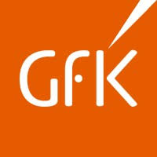

— My Journey —
Tgarage
Sydney, NSW Octobre 2022 - December 2023
Associate Director
- Work on actionable ad hoc and strategic projects for clients, projects pipeline management and profitabillity reports. Quant and quol work.
- Daily hands-on work proposols, project deliveries. In charge of account budget.
- Ad hoc projects and building of online communities. Daily use of Excel and Q.
- Management and leadership, two direct reports.
- Full responsibility of a large U&A, segmentation, online and face to face presentations to different stakeholders. Brand deep dives.
French a la Carte
St Ives, NSW January 2021 - Septembre 2022
French Teacher
- A la carte French lessons for a high-ptofile senior public on the Northern Beaches: French vocabulary and grammer mixed with culture, general French and conversation classes, weekly update on French news, politics etc.
- Two 4-days, only French immersions in the Hunter Valley, full client servicing to intermediate and advanced students in a Covid-safe envioronment.
Killarney Heights Public School
Killarney Heights, NSW 2020 -2021
Volunteering: Ethics Teacher
- Delivering the Ethics curriculum to Year 3 and Year 2 students.
Ontario Francophone Schools
Ontario, Canada 2017 - 2018
Supply Teacher
- Supply teacher across all primary school age ranges in Ontario, Canada
Toronto Accueil
Toronto, Canada 2014 - 2017
Volunteering: Vice President
Toronto Accueil is an organisation run by volunteers, under the FIAFE/ French expats umbrella, that provides services and activities to expatriate communities, predominatly from France and Belgium.
- Completed contact with members and a number of key stakeholders including the French Consulate, French Schools and relevent association and groups.

Gfk Custome Research
Paris, France 2012 - 2013
Market Research Manager
- Directly in charge of several FMCG clients and one luxury client. Daily work with a global market leader in the food industry, supplying both daily breakefast products and highly seasonal treats to different targets.
- Detailed work on innovation funnel, and media reach of seasonal or non-seasonal treats to different targets.
- Supervision of quant packaged or ad-hoc research from client brief to full results presentation, in-person presentations involving key decision makers. Combined quant and qual projects for some clients
- Managed a team of 6 Research Analysts and Group Managers.
- Completed business developement activities: prospection, proposal writing, online packeged products presentation. Daily use of Salesforce.
- Completed a broad range of client projects including scoping, analysis, benchmarking, reporting, recommendations, presentations and post implementation reviews.

Ipsos
France 2007 - 2012
Market Research Manager
- Directly in charge of 2 major FMCG Key Account clients, one in the food catagory and one in beuty. Supervision of quant packaged or ad-hoc research from client brief to full results presentation, in-person presentations in several countries. Mostly multi-country projects, involving one or several project managers.
- Combined quant and qual research for high-end positioned global brands.
- Managed a team of 4 Research Analysts.
Nielsen IQ
Belgium 2005 - 2007
Senior Analyst
- Extension market research for multiple international clients including volumetric forecasts.
- Daily analyse on Nielson and panel data.